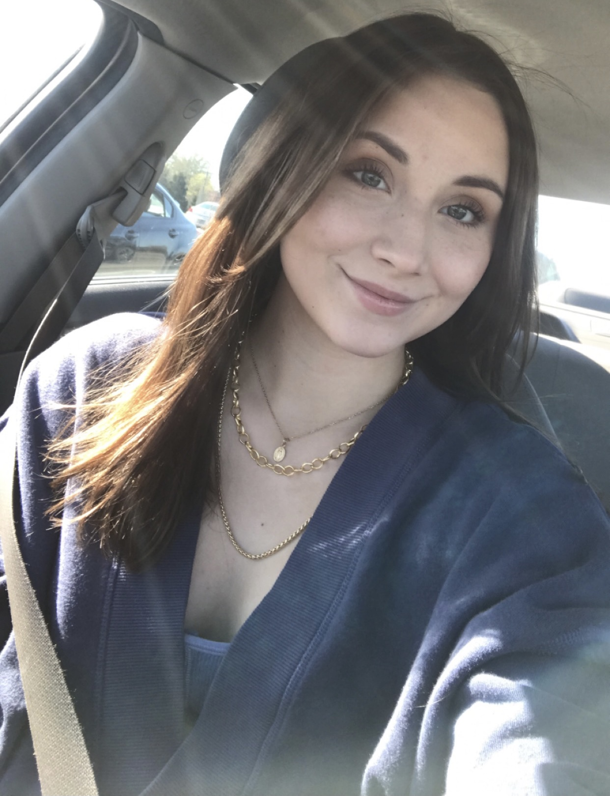

I am Destiny Garcia, a student, daughter, sister, feminist and dog lover. To get to know me better, I will explain my life through photos below.
You can send me an e-mail at drgpnd@umsystem.edu
I was born to a single mother in Lawton, Oklahoma where I resided for 12 years.
I moved to Misawa AFB, Japan in 2012 with my mom, step-dad, and two sisters Lilo and Haley. I went to school here from the 7th-11th grade. I attended school on the air force base where to played softball, cheerleading, and learned my love for acting/theatre and photography. I traveled to Tokyo with my family, explored the town I lived in, attended various Japanese festivals, and traveled around Japan and South Korea for sports and theatre tournaments and camps.
In 2017, my family was moved to Scott AFB, Illinois where to finished my senior year and high school and grew to love creative writing.
In 2018, I graduated High School and moved back to Oklahoma to attend Cameron University where I studied journalism and worked for the university collegian as a staff editor and copy writer for the very first time ever. I was only there for one semester
In 2019, I atteneded a Mizzou homecoming football game with my grandpa who is a MU alumni and my dad. By complete coincidence I ran into a lady in the Journalism Institute builing who was looking for attendees who signed up for a Journalism school tour. She asked me if I was one of them, when I told her that I was not one of them, she told me "well, now your are". I toured the school and fell in love. I applied in my hotel room that night, paid the application fee myself, and the rest is history.
I now am a student studying at my dream school, The University of Missouri School of Journalism. I work part time as a waitress to afford school like many other students do and live with my boyfriend and dog-son, Eugene.
How do monsters like their eggs?
Terri-fried!